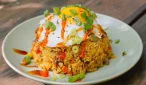

Foodieland
Home
Menu
Receipe
About
Contact
Healthy Japanese Fried Rice
Quick, healthy, and delicious fried rice with Japanese flavors!

Preparation Time:
10 minutes
Cooking Time:
15 minutes
Servings:
2 servings
Ingredients:
2 cups cooked rice
1 tbsp sesame oil
1/2 cup chopped carrots
1/2 cup peas
2 eggs, scrambled
2 tbsp soy sauce
1 tbsp mirin
Chopped green onions for garnish
Instructions:
Heat sesame oil in a large pan or wok over medium heat.
Add carrots and peas, and sauté for 3-4 minutes until tender.
Push the vegetables to the side and add the scrambled eggs. Stir to cook.
Add the cooked rice, soy sauce, and mirin. Mix everything well.
Cook for another 3-5 minutes, stirring occasionally.
Garnish with chopped green onions and serve hot.